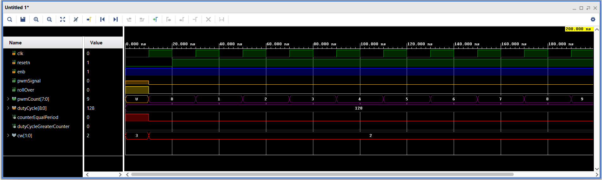
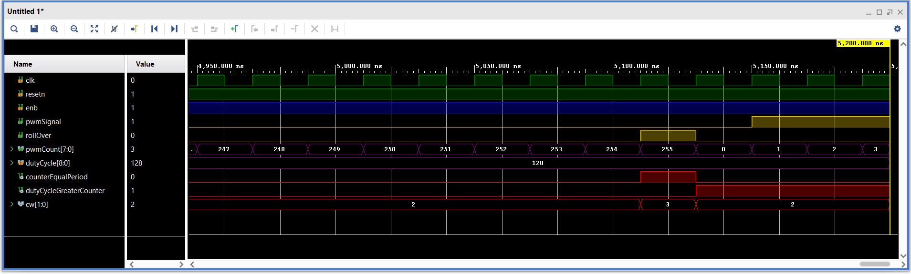
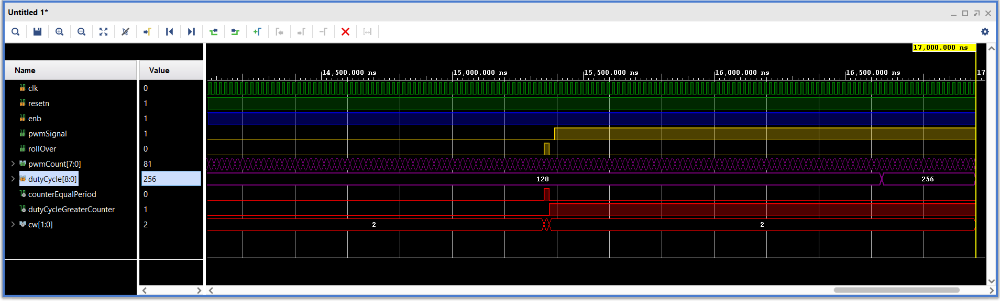
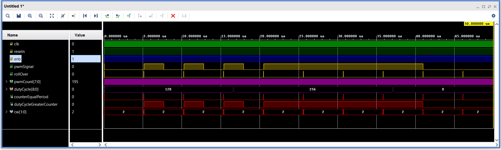

| Lab: | 1 |
| Status | In Progress
|
Lab 1 - Enhanced PWM
In this lab, you will write a VHDL code for a PWM controller that
can be used for a variety of purposes including the first stage of
a PWM digital to analog converter (DAC). After completing the code,
you will test the PWM module using a testbench to make sure that it
functions as intended.
Overview
A pulse width modulated (PWM) waveform has a constant period and a
variable duty cycle. The duty cycle of a waveform is the time
high divided by the period, usually represented as a percentage.
In our case, the duty cycle is a integer between 0 and 256.
- When the duty cycle is 0, the PWM waveform spends 100% of its
time at logic 0.
- When the duty cycle is 256, the PWM waveform spends 100% of its
time at logic 1.
It may take a moment of reflection to appreciate that the duty cycle
is a 9-bit integer.
Let's flex our ability to decribe a digital component using the
format introduced to decribe basic building blocks.
| Other | 1-bit clock and 1-bit, active low resetn
|
| Data input | 9-bit duty cycle
|
| Data output | 1-bit pwmSignal, 8-bit pwmCount
|
| Control input | 1-bit enable
|
| Status output | 1-bit rollOver
|
| Behavior | When enabled, the pwmOutput signal is a PWM
waveform whose period is 256 counts. The duty
cycle of pwmOutput is given by the dutyCycle input.
When disabled, pwmOutput is static holding at either
logic 0 or logic 1. The dutyCycle is loaded only when
the internal counter rolls over to 0. When this occurs,
the rollOver output pulses to logic 1 for a single cycle.
The internal counter's value is sen to the pwmCount
output.
|
Architecture
The design of Lab 1 is broken down into separate modules, some of which
are provided for you and some which you will need to create. The
interconnection of the modules is illustrated in the following schematic.
When a signal name appears just inside a box, that should should correspond
to the name of that signal in the entity description.

VHDL Code
In order to get you going in this lab, some of the VHDL code has been
provided for you. In most cases, you should refrain from changing the
modules given. In order to get a better understanding how these modules
interact with one another, the following section provides a schematic
and the input, output and behavior of some of the modules.
Simulation
You will need to run simulations to make sure that all your
videoSignalGenerator is producing the correct waveforms. I've
included a testbench file and TCL setup script to help you setup
the testbench.
| Signal | Color | Radix
|
| clk | Green | binary
|
| resetn | Green | binary
|
| enb | Blue | binary
|
| pwmSignal | Gold | unsigned
|
| rollOver | Gold | unsigned
|
| pwmCount | Purple | unsigned
|
| dutyCycle | Purple | unsigned
|
| E255 | Red | binary
|
| dutyGrPwmCount | Red | binary
|
| counterControl | Red | binary
|
To help you in debugging, I've prodvided some excerpts from my
testbench simulation. If you right-click on the images and
open in a new window, they will enlarge. Your output should
be identical.
| Up to 200ns |  |
| At 5.2u |  |
| At 17us |  |
| Up to 50us |  |
Required Functionality
- You will be asked to show the following simulation results,
- Be prepared to demo your testbench at the times given in the
examples shown above.